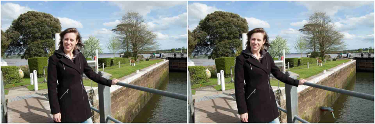
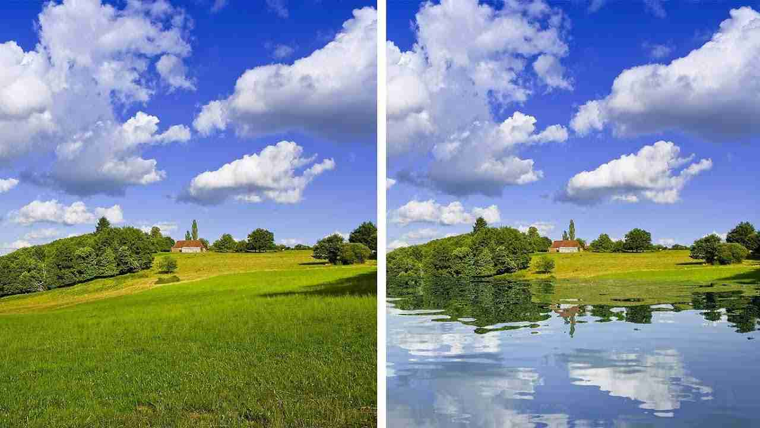

01 · 596fa37556152c22b45c6eb2.avif
AVIF · 1920 × 640 · 3 görünüm · 8 kalite
Detaylı raporu açIREMIMG · DETAYLI ANALİZ ÇIKTILARI
Her dosyanın bütün, sol ve sağ hali için JPEG kopyaları, ELA haritaları, bindirmeler ve ham ölçümler hazır. Kalite 20 dosyalarını ayrıca bir araya topladım.
ELA burada ne anlatıyor? Girdiyle yeniden JPEG kaydedilen görüntünün piksel farklarını gösteriyor. Kaynakların ikisi AVIF, ikisi WebP, ikisi JPEG. JPEG dışındaki girdilerde ölçülen şey o formatın JPEG'e dönüşüm farkı. Bu altı kolaj için doğrulanmış orijinal/sahte etiketleri ve düzenleme maskeleri yok; sol ve sağ tarafları buna göre adlandırmıyoruz.
Bir rapor açıp bütün / sol / sağ görünümünü ve kaliteyi seç. Sekiz kalite: 5, 10, 20, 40, 60, 80, 90, 95. Fotoğraf boyutu analizden önce küçültülmedi.

AVIF · 1920 × 640 · 3 görünüm · 8 kalite
Detaylı raporu aç
AVIF · 1920 × 641 · 3 görünüm · 8 kalite
Detaylı raporu aç
WEBP · 1024 × 370 · 3 görünüm · 8 kalite
Detaylı raporu aç
JPEG · 1280 × 720 · 3 görünüm · 8 kalite
Detaylı raporu aç
WEBP · 1024 × 385 · 3 görünüm · 8 kalite
Detaylı raporu aç
JPEG · 880 × 663 · 3 görünüm · 8 kalite
Detaylı raporu açBu sayılar başarı veya sahte olma yüzdesi değildir. Paneller ayrı yeniden JPEG işlemlerinden geçer; boyutları, içerikleri ve blok sınırları farklı olabilir.
| Dosya | Bütün | Sol panel | Sağ panel |
|---|---|---|---|
| 01 · 596fa37556152c22b45c6eb2.avif | 6.064 | 6.058 | 6.071 |
| 02 · 596fa37556152c22b45c6eb3.avif | 5.445 | 5.479 | 5.413 |
| 03 · kh-composite-man-2.webp | 5.281 | 5.196 | 5.368 |
| 04 · maxresdefault.jpg | 6.715 | 7.624 | 5.808 |
| 05 · nintchdbpict000339476175.webp | 6.898 | 6.918 | 6.881 |
| 06 · plus-size-celebrity-photoshopped-thinner-project-harpoon-thinnerbeauty-13.jpg | 4.861 | 5.460 | 4.262 |
Önceki kontrol/render PNG çiftlerinden tam boyutlu JPEG 20 kopyaları üretildi. Bu bölümdeki ELA ve overlay önizlemeleri, tam boyutlu analizden sonra en uzun kenarı 1280 piksel olacak şekilde küçültüldü.
| Örnek | Kontrol · Q20 | Render · Q20 | Fark haritaları |
|---|---|---|---|
| duyuru 2160 × 3840 | Kontrol JPEG 20 | Render JPEG 20 | Kontrol ELA · Render ELA Kontrol overlay · Render overlay |
| karga 4284 × 5712 | Kontrol JPEG 20 | Render JPEG 20 | Kontrol ELA · Render ELA Kontrol overlay · Render overlay |
| error 387 × 130 | Kontrol JPEG 20 | Render JPEG 20 | Kontrol ELA · Render ELA Kontrol overlay · Render overlay |
JPEG klasörü seçilen kalitelerde gerçek yeniden kaydedilmiş dosyaları içerir. ELA klasörü 0–20 ortak renk ölçeğini kullanır. Overlay, aynı haritanın giriş üzerine %55 opaklıkla çizilmiş halidir. Ham NPZ dosyalarında renk uygulanmamış float32 ELA dizileri bulunur. Her görünümün histogramı ve kenar haritası da vardır.
Ortalama, medyan, P90/P95/P99, en büyük fark, kanal RMSE'si, görünüm üst sınırını aşan piksellerin oranı, JPEG dosya boyutu ve süre kaydedildi. Süre JPEG kodlama, çözme ve fark hesabını kapsar. Dosya yükleme, istatistik özetleri, çizim ve dışa aktarma dahil değildir. Metin, kenar ve dokular da yüksek fark üretebilir; genel parlaklığı doğrudan manipülasyon olarak okumayacağız.